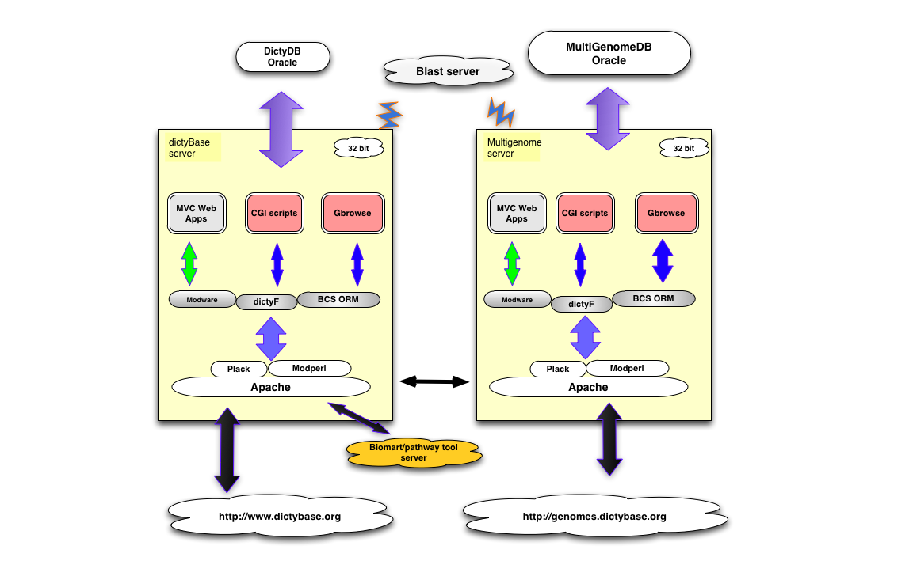
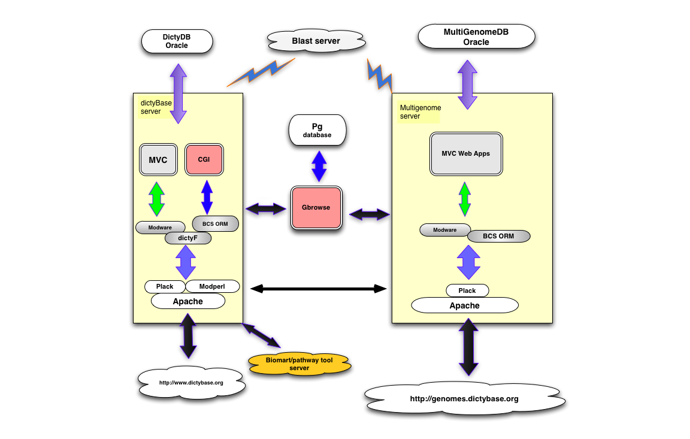
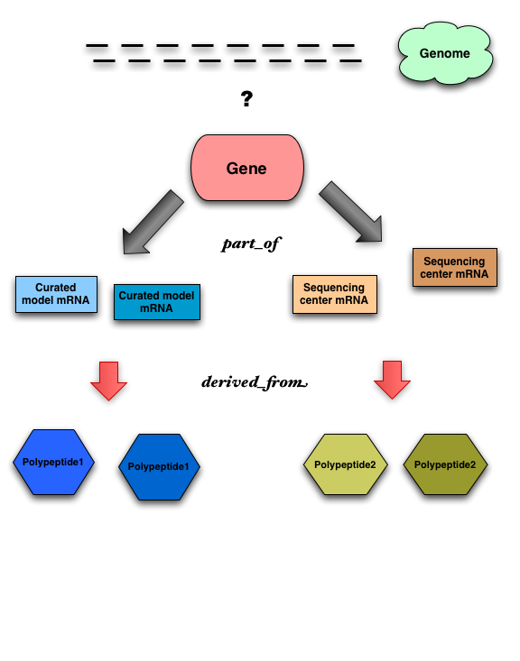
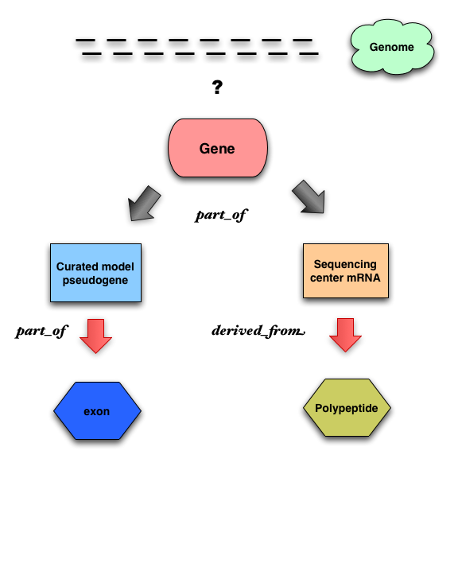
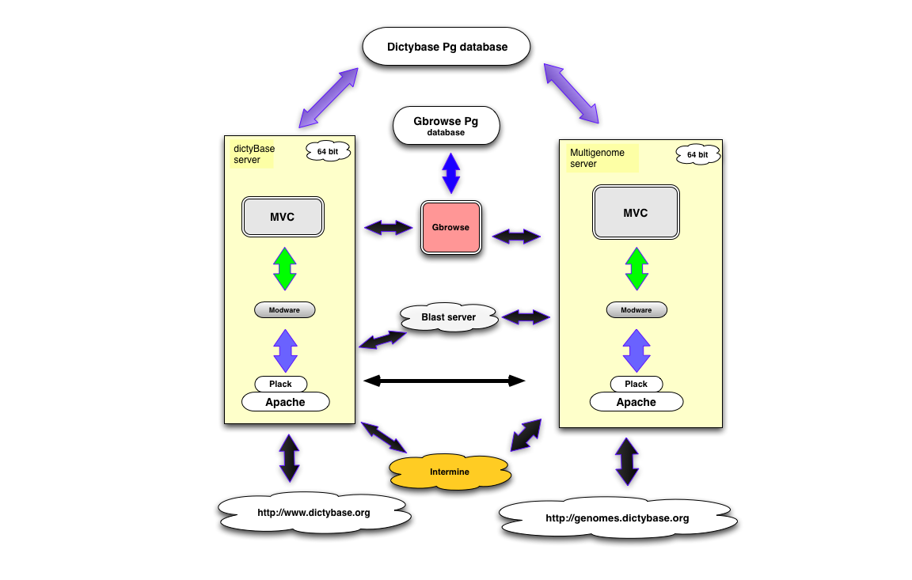

Dictybase migration overview
Agenda
-
Overview of seutp and issues at dictyBase
-
Broad overview of migration tasks, proposal and ideas
Current architechture (As of today)

Architechture after multigenome release

Web applications (MVC)
Gene page
Publication/GO
Yulia's fast-track curation tool
BLAST interface
CGI scripts
Stock center
Site Search
Legacy curation tool
Phenotype tool
Blast webservice
Misc. interfaces (abstract submission, EST page etc ..)
Old/outdated software
Core software status
OS (Ubuntu - Dapper Drake) - 6 yrs old (Unsupported)
Perl 5.8.7 - 7 yrs old
Class::DBI (core for dicty) - 8 yrs old (Not actively developed)
Other software status
prototype.js (Phenotype tool) - 6 yrs old
BioMart - 6 yrs old
Apollo - 5 yrs old (dead)
BLAST binaries - 5 yrs old
Chado data model (curated isoforms....)

Chado data model (pseudogene ....)

Agenda
-
Overview of seutp and issues at dictyBase
-
Broad overview of migration tasks, proposal and ideas
Running architecture |
After migration |
|
|

|
Data model after migration
Proposed migration tasks
- Migrate Oracle to PostgreSQL (100% chado)
- Develop Modware for new data model
- Rewrite web applications
- Migrate CGI scripts to web applications
- Rewrite standalone scripts and pipelines
- Behind the scene projects(unit testing, deployment ...)
- Third party tools
Data/Database migration (Ora2Pg)
- Pg architecture setup
- Core genome data model(Ora) --> GFF3 dump --> Bulk load in Pg (ETA: 2 weeks)
- Annotation (Ora) -> Free text dump -> Load in Pg (ETA: 3 weeks)
- Strains data (Ora) -> dicty::Feature -> Modware -> Pg (ETA: 2 weeks)
Develop Modware components
Core genome features
Strains/Phenotype/Genotype ...
ETA: 1.5 months
CGI to MVC rewrite
Phenotype tool (ETA: 3 months)
Stock center (ETA: 2 months)
Search (ETA: 1 months)
Blast webservice (ETA: 2 weeks)
Web application partial rewrite
Gene page (ETA: 1 month)
Merge legacy curation tool into Yulia's curation tool (ETA: 2 months)
Blast interface (ETA: 2 weeks)
Scripts and pipeline rewrite
Domain pipeline
Sequence, blast database dumping scripts
Strain data dumping scripts
ETA: 2 months
Behind the scene infrastructure projects
Setting up VMs
Common unit testing modules
Automated deployment
Database migration and data patch module
ETA: 2 months (excluding VMs)
Third party tools
Biomart --> Intermine
Apollo --> Webapollo ?
Pathway tool
Last but not the least
Static pages --> Web based editor/content management tool
←
→
/